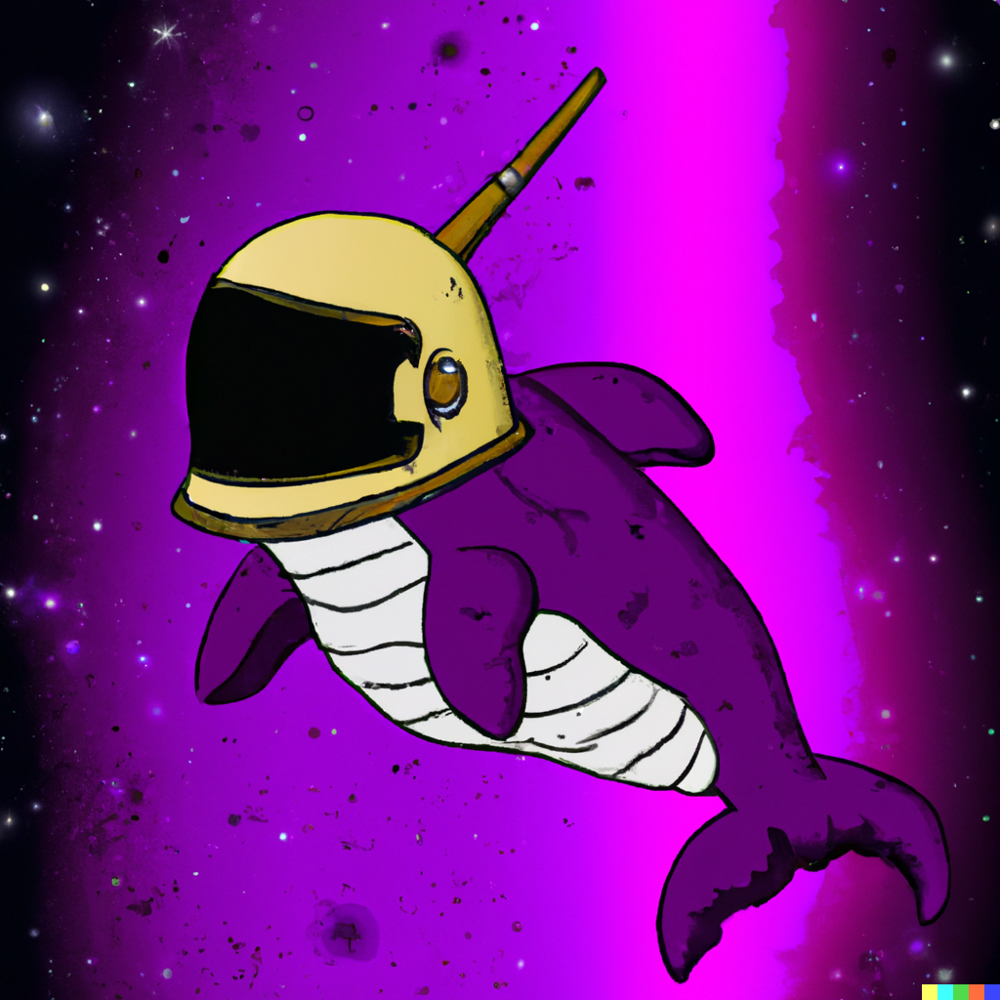

Aqui apareceran todas las fuentes en las que me aplle para generar esta pagian Web
A lo largo de estas clases, he aprendido a crear una página web desde cero. No puedo subestimar la ayuda invaluable que recibí de la plataforma de Egg, proporcionándome información esencial y herramientas clave. Quiero agradecer tambien a Chat GPT por brindar asistencia en la redacción de este texto y ayuda en el codigo, a DALLE2 por diseñar el logo y quiero mencionar a Dreamstudio por proveer las imágenes que embellecen mi sitio. Este texto fue creado por el modelo de lenguaje Chat GPT. Sin su ayuda, esta página no existiría.
fe de rata: Chat gpt se adula mucho a lo ultimo.
